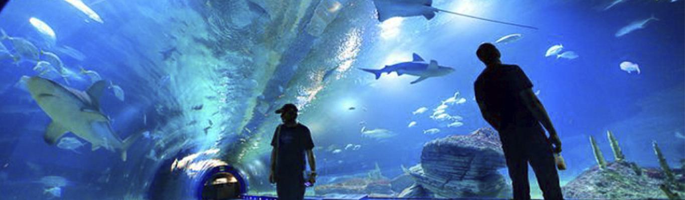

- Que las personas visiten nuestra entidad tengan conciencia de los animales que cuidamos y preservamos su existencia.
- Que cada animal tiene su hábitat y que algunos se dividen por categorías para que no se casen y se promueva su especie.
- Cuidar de todas nuestras especies y darles el mejor trato para cuidarlos.

- Cada día estamos vigilando cada especie para evitar accidentes dentro de su hábitat o entre ellos. Cada hábitat tiene sus propias características de agua o frías para conservar bien la especie.
- Todos sus alimentos son checados y de alta calidad, la nutrición de las especies en exhibición, lo que permitirá el desarrollo de los individuos en buen estado de salud, con longevidad prolongada e incluso la posibilidad de reproducción.
- Los especímenes deben de ser capturados en el mejor estado posible y con el estrés mínimo para su captura, traslado y recepción Se busca de todas las especies y más en las que están en peligro de extinción para que no peligren al aire libre y desaparezcan por accidentes o por la porpia naturaleza.